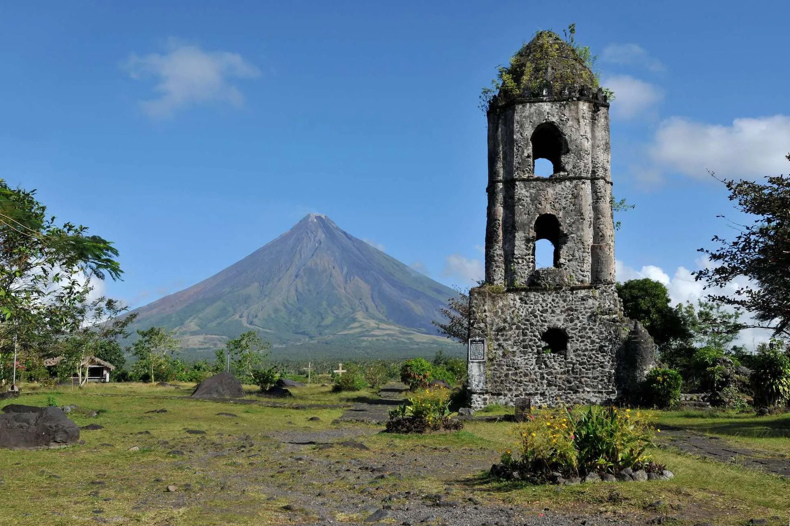
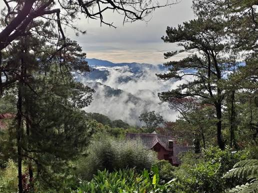
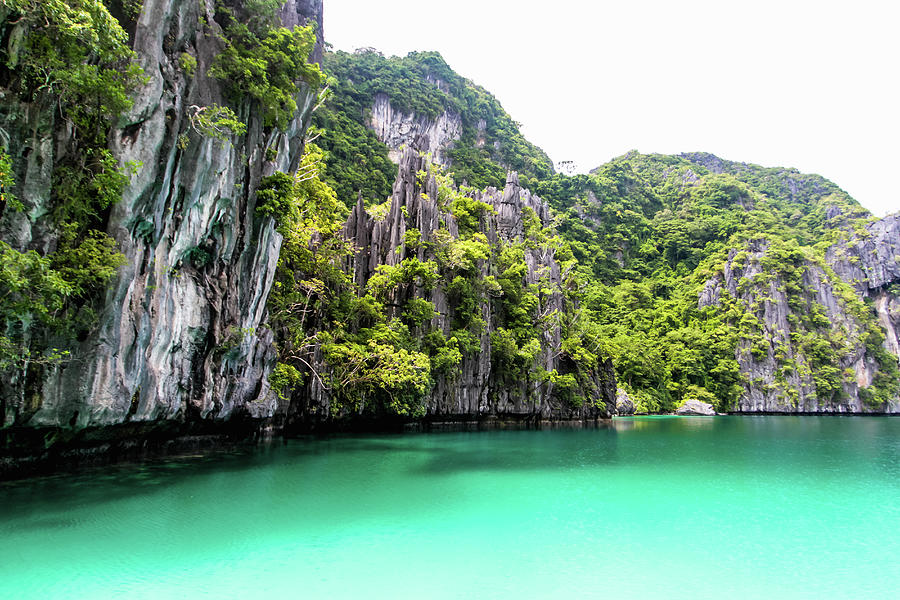
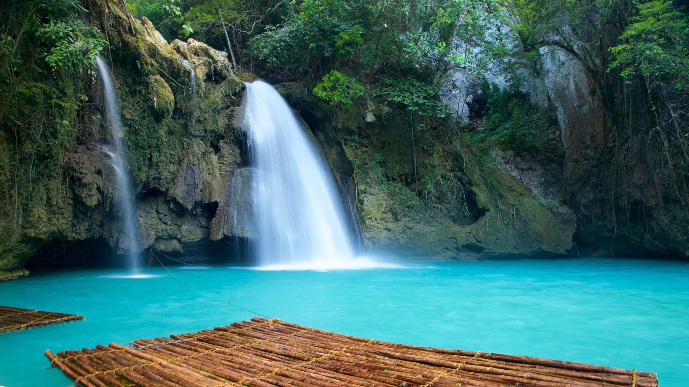
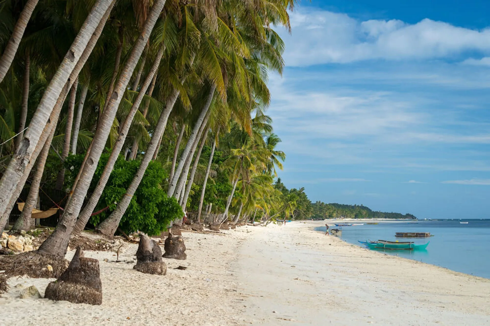
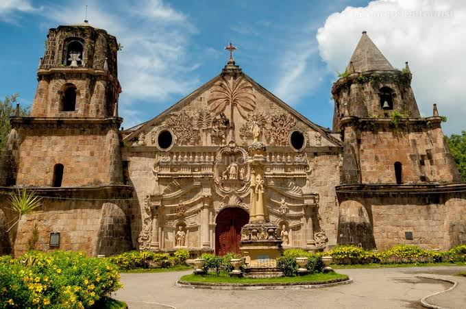
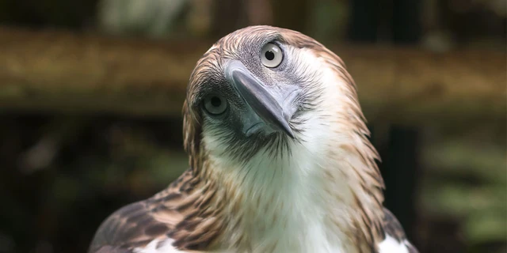
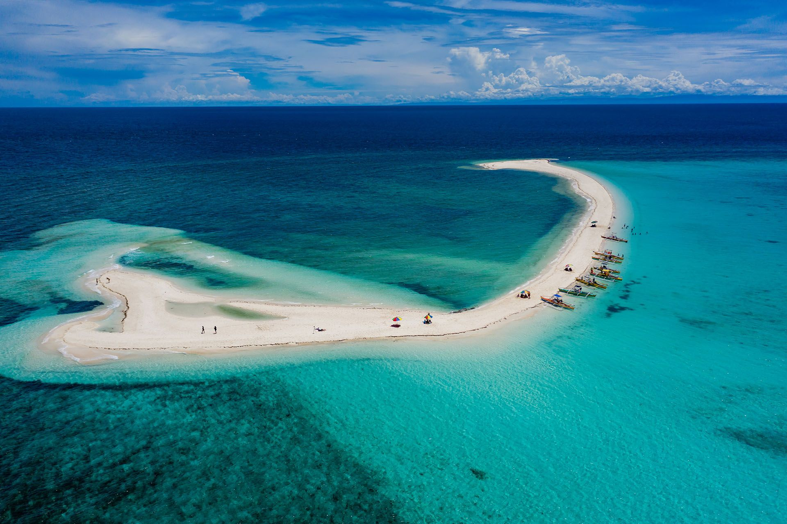
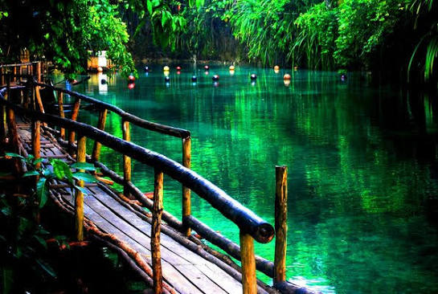
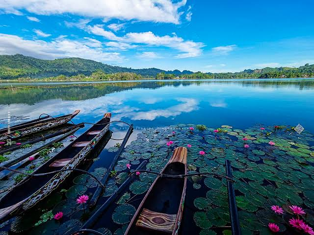

pick an island group
our 18 destinations
Tap a tab to browse — six destinations each for Luzon, Visayas, and Mindanao.
Home to the capital region, historic towns, volcanoes, and Palawan's island lagoons.
Ifugao
Carved into the mountains over 2,000 years ago, this UNESCO World Heritage Site proves our ancestors were engineers way ahead of their time.
Ilocos Sur
Cobblestone streets, kalesa rides, and Spanish-era houses — Vigan feels like stepping into a different century.
Batangas
A volcano inside a lake inside an island — Taal is one of the smallest active volcanoes in the world, and one of the most photographed.

Albay
That famous perfect cone shape isn't a filter — Mayon really does look that symmetrical from every angle.

Benguet
The Summer Capital of the Philippines, known for cool weather, pine trees, and the best strawberry taho you'll ever have.

Palawan
Towering limestone cliffs, hidden lagoons, and water so clear you can count the fish — El Nido is paradise on a boat tour.
The heart of Philippine beach life — white sand, chocolate-colored hills, and island-hopping galore.
.jpg)
Aklan
White Beach's powder-fine sand has made Boracay one of the most famous islands in the world — sunset here hits different.
Bohol
Over a thousand cone-shaped hills turn brown in the dry season, giving Bohol its most iconic (and oddly named) landmark.

Cebu
Turquoise water, canyoneering routes, and a waterfall so blue it looks edited — Kawasan is Cebu's outdoor bucket-list stop.

Siquijor
Known for folklore and healers, Siquijor's mystical reputation is matched by its untouched beaches and hidden waterfalls.

Bohol
Home to Alona Beach and world-class dive spots, Panglao is where Bohol's underwater scene really shows off.

Iloilo
A baroque fortress-church built to fend off raiders, this UNESCO-listed landmark is a stone-carved piece of Philippine history.
Rainforests, surf towns, and indigenous culture — the Philippines' most underrated island group.

Davao City
Home to the critically endangered Philippine Eagle, this sanctuary is where conservation meets national pride.

Camiguin
More volcanoes than towns — Camiguin packs hot springs, a sunken cemetery, and a white sandbar into one small island.
Surigao del Norte
The Surfing Capital of the Philippines, Siargao's Cloud 9 wave draws surfers from all over the world.

Surigao del Sur
This impossibly blue river gets its color (and its name) from stories locals still tell about the spirits living beneath it.

South Cotabato
Home to the T'boli people, Lake Sebu offers zip-lines over the water and a front-row seat to indigenous weaving traditions.

Davao del Norte
A quick boat ride from Davao City, Samal is packed with beach resorts, caves, and some of Mindanao's best diving.